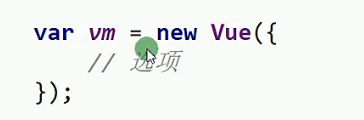
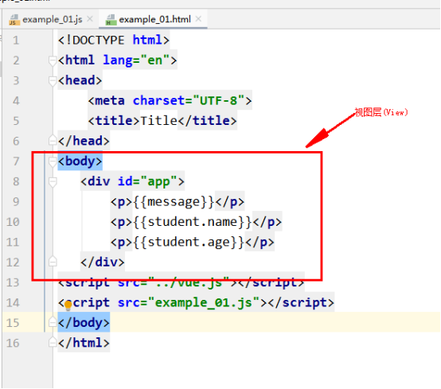
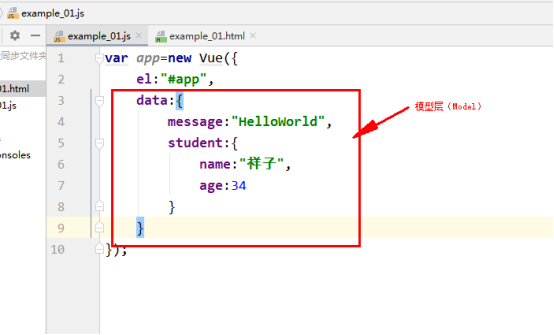
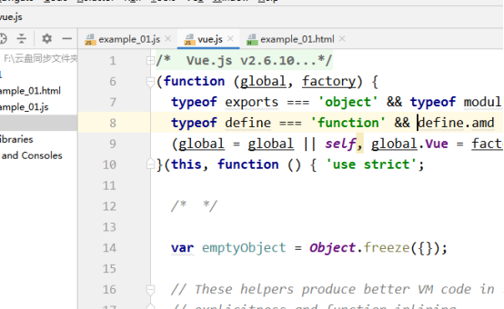
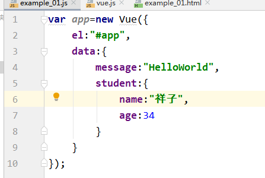
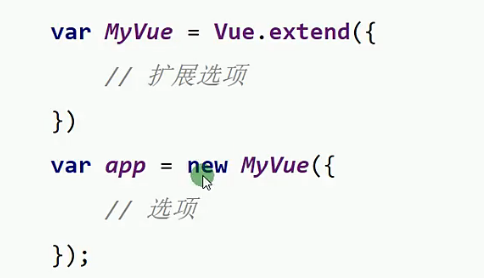
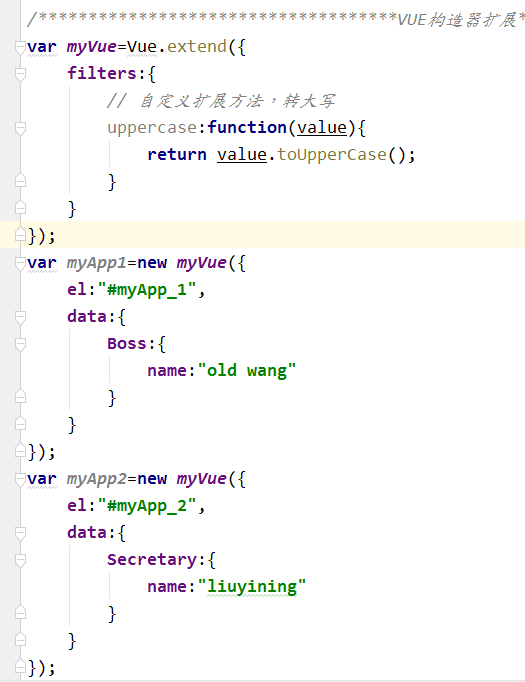
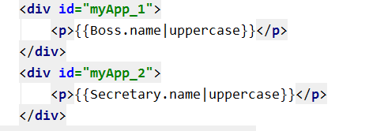
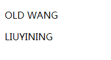

VUE构造器是一个非常重要的语法。
每个Vue.js应用都是通过构造函数Vue创建一个根实例。

New了Vue对象，然后调用了这个vue对象的构造器，并向构造器传入了数据。
在实例化Vue时，需要传入一个JSON对象，它可以包含数据、模板、挂在元素、方法、回调函数等选项，全部的选项可以在API文档中查看。


既然VUE是MVVM架构的，我们已经找到了Model和View层，那么ViewModel是在哪里呢？
我们看一下这个文件 vue.js，这个是从vue官网上下载的。

我们知道，控制器要监控视图，也要监控模型，当视图发生变化，控制器会及时通知模型层，同理，模型层发生变化，控制器会及时通知视图层。
那么下面的这个vue对象是不是就是控制器呢？

我们可以看出，这个vue对象通过el属性监控视图层，通过data监控模型层，那么就说明这个vue对象就是控制器。
所以我们得出一个结论：控制器就是vue对象，他在vue.js创建。
Vue.js已经定义好了控制器，因此我们开发人员不会修改此文件，增加什么东西，所以我们在开发vue程序时，我们只是会写 视图层和模型层的代码。
Vue的构造器可以被扩展使用，这样就免去了重复定义构造器的很多内容。

我们以一个增加字母大写转换的过滤器为例说明：


显示效果：
